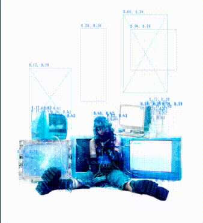

Banger i found · han.irl<3
Dopamine crash!

Open on SpotifyVibe deck
My personal audio picks live here. Press play, vibe, and drop recommendations below :D
Tracks I've been listening to on repeat — give them a spin.

Open on Spotify Open on Spotify
Open on Spotify